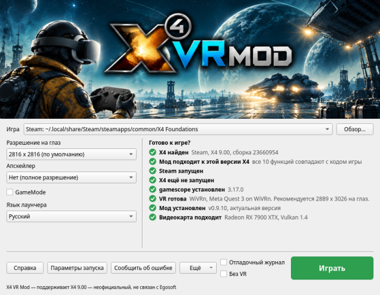
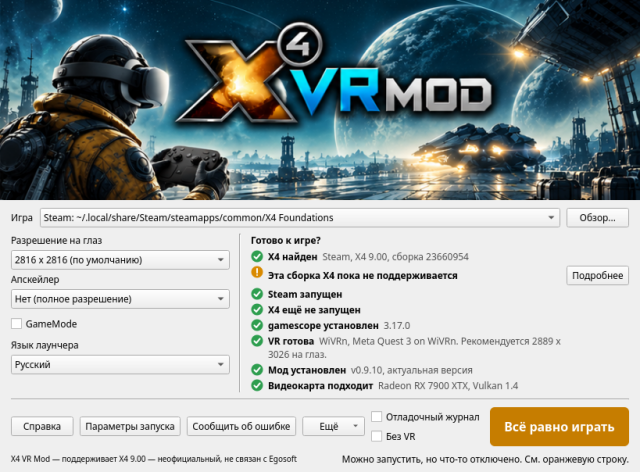
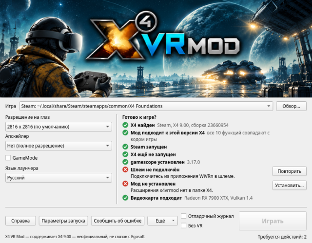
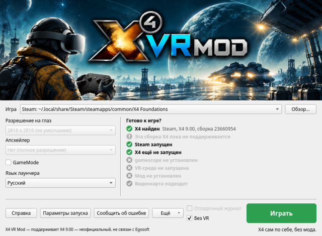
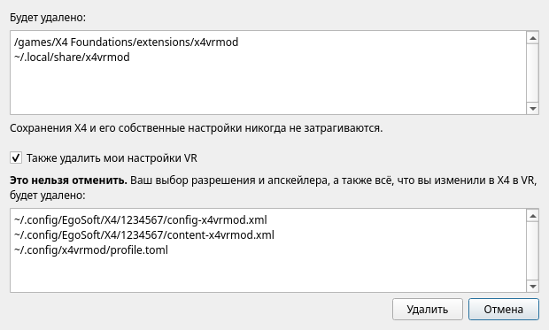
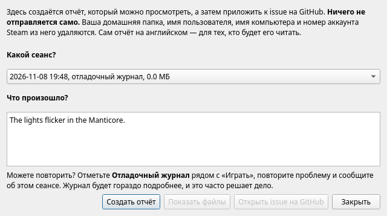

Это окно находит X4: Foundations, устанавливает мод, сообщает, всё ли готово, и запускает игру в VR. Наведите указатель на любой элемент окна, чтобы увидеть короткое пояснение. Всё остальное — на этой странице.
С чего начать | Игра | Разрешение на глаз | Настройки для шлемов | Апскейлер | GameMode | Язык лаунчера | Расстояние между глазами | Играть | Без VR | Список проверок | Параметры запуска | Установка | Удаление | Ещё | WiVRn или SteamVR? | Решение проблем | Сообщить об ошибке

Список проверок обновляется сам, так что после запуска VR-среды или подключения шлема ничего не нужно открывать заново.
Копия X4, которую нужно использовать. Лаунчер спрашивает у Steam, в какой из ваших библиотек лежит X4, и ищет в списке игр GOG программы Heroic и в ~/GOG Games. Если вашей копии нет в списке, нажмите Обзор... и выберите программу с именем X4.
Это должна быть версия для Linux. Мод изменяет программу X4 для Linux во время работы и подключается к её рендереру Vulkan средствами самого Linux. Версия для Windows под Proton — это другая программа, поэтому, если выбрать X4.exe, лаунчер скажет, что так работать не получится. Если Steam принудительно запускает X4 через Proton, отключите это в «Свойствах» X4, в разделе «Совместимость», и дайте Steam скачать версию для Linux.
GOG: лаунчер находит её, и всё работает так же, как с копией из Steam. Если у вас есть обе, выберите нужную в поле «Игра».
Steam, установленный как Flatpak, не поддерживается, и пока это не планируется. Его песочница не видит ни частей мода, ни gamescope, а VR в ней сложнее для любой игры: она видит только Flatpak-версию самого WiVRn, а SteamVR работает там с пониженной производительностью. Если игроки попросят, это может измениться — напишите об этом в issue.
Лаунчер отмечает копию X4, установленную Steam в Flatpak. Используйте Steam из пакетов вашего дистрибутива или копию из GOG, которой Steam не нужен.
Размер изображения для каждого глаза. Здесь изображение для глаза всегда квадратное. Чем больше, тем чётче, а видеокарте приходится рисовать его дважды, по разу для каждого глаза.
Почему оно выбирается здесь, а не в X4: изображения мода и экран gamescope получают размер при запуске игры, а X4 сразу применяет выбор из своего меню, и это ломает идущий сеанс. Поэтому разрешение выбирается до запуска.
Когда шлем подключён, в списке отмечен размер, ближайший к тому, что запрашивает ваш шлем. Это рекомендация VR-среды, которая уже учитывает линзы, и обычно она больше разрешения экрана шлема.
Выше 4068 на глаз трёхмерный вид карты становится плоским вместо объёмного — из-за того, как X4 размещает большие изображения в памяти. В SteamVR при 4224 уже показывалась перемешанная картинка; если увидите такое, уменьшите разрешение.
Отправные точки, рассчитанные по экрану каждого шлема. Средне — чёткое изображение по полной цене. Низко — тот же размер с апскейлером, так что X4 рисует меньше половины пикселей. Высоко — изображение побольше с апскейлером, так что X4 рисует примерно столько же, сколько в «Средне», а апскейлер и больший размер стоят сверху ещё немного.
| Шлем | Экран, на глаз | Низко | Средне | Высоко |
|---|---|---|---|---|
| Meta Quest 3 | 2064 x 2208 | 2816 + FSR 1 Качество | 2816 | 4224 + FSR 1 Качество |
| Steam Frame | 2160 x 2160 | 2816 + FSR 1 Качество | 2816 | 4224 + FSR 1 Качество |
| Pico 4 | 2160 x 2160 | 2816 + FSR 1 Качество | 2816 | 4224 + FSR 1 Качество |
| Meta Quest 3S | 1832 x 1920 | 2400 + FSR 1 Качество | 2400 | 3600 + FSR 1 Качество |
| Meta Quest 2 | 1832 x 1920 | 2400 + FSR 1 Качество | 2400 | 3600 + FSR 1 Качество |
| Valve Index | 1440 x 1600 | 2048 + FSR 1 Качество | 2048 | 3072 + FSR 1 Качество |
| HTC Vive Pro | 1440 x 1600 | 2048 + FSR 1 Качество | 2048 | 3072 + FSR 1 Качество |
| HTC Vive | 1080 x 1200 | 1600 + FSR 1 Качество | 1600 | 2400 + FSR 1 Качество |
Проверены в игре только «Средне» и «Высоко» на Quest 3, с WiVRn и Radeon RX 7900 XTX. Остальное — то же правило, применённое к экрану каждого шлема. Если попробуете какой-то из них, ваши наблюдения будут кстати в отчёте об ошибке.
Апскейлер позволяет X4 рисовать изображение меньше и увеличивает его, ценой части чёткости. Когда он включён, строка «Рендеринг» под списком показывает, какой размер X4 рисует на самом деле.
Автоматический выбор: если при «Нет» поднять разрешение выше 3200 на глаз, выбирается FSR 1 Качество, потому что рисовать столько пикселей дважды плавно может не всякая видеокарта. Об этом сообщает пояснение, и выбор «Нет» это отменяет. Выбор, сделанный вами, никогда не меняется, а при возврате к 3200 и ниже «Нет» возвращается, только если выбирал лаунчер.
Если установлен Feral GameMode, появляется этот флажок. Когда он отмечен, игра получает приоритет над остальной системой, пока работает, и обычно это добавляет несколько кадров в секунду. Он действует при любом способе запуска игры: «Играть», «Без VR», строка запуска Steam или терминал. Если GameMode не установлен, флажка нет и ничего не меняется.
Это окно и эта справка открываются на языке вашей системы, если это английский, бразильский португальский, французский, русский или немецкий, а иначе — на английском. Список Язык лаунчера под GameMode меняет язык, и ваш выбор сохраняется. Сама X4 остаётся на том языке, который вы выбрали для неё в X4 или в Steam.
Переводы — это первый черновик, сделанный старательно, но без проверки носителями. Если слово неверное или звучит странно, исправления приветствуются в виде pull request или комментария к issue. Отчёт об ошибке и то, что выводит команда x4vrmod, остаются на английском, чтобы их мог прочитать любой, кто будет их разбирать.
Настраивать ничего не нужно: мод берёт расстояние между вашими глазами у шлема, с первого же кадра. Покрутите регулятор IPD на самом шлеме, и мир будет следовать за ним прямо во время игры.
Чтобы задать своё значение, если мир кажется слишком маленьким или слишком большим, укажите своё расстояние в метрах. Его может измерить оптик или приложение для телефона. Оно действует со следующего запуска игры и сохраняется, пока вы его не уберёте:
x4vrmod config set ipd 0.0635
Это 63,5 мм. Чтобы вернуть значение шлема:
x4vrmod config unset ipd
Пока задано своё значение, мир больше не следует за регулятором шлема. Если шлем когда-нибудь сообщит расстояние, которого не бывает у глаз (вне 50–80 мм), мод ему не поверит, оставит последнее хорошее значение или 64 мм и запишет это в свой журнал.
Зелёная «Играть»: всё готово.
Оранжевая «Всё равно играть»: игра может запуститься, но что-то работать не будет. Оранжевая строка говорит, что именно. Обычно так бывает после обновления X4.

Серая «Играть»: запуск пока невозможен. Красная строка объясняет почему, обычно с кнопкой, которая это исправляет.

Пока игра работает, на кнопке написано «X4 запущен», и лаунчер не мешает. После игры строка сообщает, как прошёл сеанс.
Отметьте Без VR, чтобы запустить X4 сам по себе, на экране, так же как он запускается без мода, даже если VR работает. Ничего из мода не загружается, его расширение остаётся выключенным, так что действуют ваши собственные настройки и сохранения, а строки, важные только для мода, становятся серыми.

Это точка отсчёта: если и так что-то не в порядке, дело не в моде, и об этом очень полезно написать в отчёте об ошибке.
Лаунчер нашёл копию X4 для Linux и прочитал её версию. Если нет, см. раздел Игра.
Несколько функций мода меняют код X4 в памяти, поэтому им нужен именно тот код, под который они написаны. Вместо сравнения контрольной суммы, которое отвергло бы маленький хотфикс, не меняющий ничего из того, что мы трогаем, лаунчер выполняет собственные проверки мода над файлом X4, функцию за функцией.
Если эта строка оранжевая, перечисленные функции из соображений безопасности отключаются, а игра всё равно работает. После обновления X4 дождитесь нового выпуска мода или играйте без них.
Для Steam-версии X4 нужен запущенный Steam, потому что при старте X4 запрашивает у него вашу учётную запись. Копии GOG он не нужен, и этой строки для неё нет.
Мод должен быть на месте с момента запуска X4, поэтому уже открытую копию нужно сначала закрыть.
gamescope даёт X4 виртуальный экран под размер обоих глаз, независимо от разрешения рабочего стола. Это отдельная программа; установите её из пакетов вашего дистрибутива.
Лаунчер ненадолго спрашивает вашу VR-среду через OpenXR, есть ли шлем, не запуская VR-сеанс, — это надёжнее, чем искать запущенные программы.
Части мода, которые кнопка Установить... ставит на место вместе. Одна стоит между X4 и видеокартой и создаёт изображения для двух глаз, и загружается только по запросу мода, так что другие программы это не затрагивает. Другая — небольшое расширение X4 в папке extensions игры, которое позволяет поворачивать голову дальше, чем X4 обычно разрешает, и убирает покачивание камеры. «Устарел» значит, что они из другого выпуска, чем этот лаунчер; Установить... заменит их.
Мод рисует оба глаза за один проход с помощью возможности Vulkan под названием multiview, и ему нужны Vulkan 1.2 и один свободный набор дескрипторов. Это есть почти у любой видеокарты последних лет. Если эта строка красная, сначала обновите графический драйвер.
Параметры запуска показывают точную строку для вашей копии, с кнопкой «Копировать». «Играть» — самый простой путь, а эти строки нужны, если вам удобнее запускать из Steam или терминала. Оба способа запускают мод так же, как «Играть», с настройками из этого окна.
Steam заменяет %command% своей командой для X4, а x4vrmod run запускает X4 с этой командой, поэтому она обязательна. Пока эта строка задана, Steam всегда запускает X4 в VR; очистите её, чтобы снова играть без VR.
Если Steam настроен запускать X4 через Proton, строка откажется запускать игру и объяснит почему: мод работает только с версией для Linux. Steam, установленный как Flatpak, не поддерживается: см. Steam в Flatpak.
Кнопка Установить... появляется в той строке списка проверок, которую она исправляет. При установке из zip она копирует мод в ~/.local/share/x4vrmod и регистрирует его слой Vulkan только для вас, так что распакованную папку можно удалить, а строка запуска Steam продолжит работать. При установке из пакета всё это уже на месте. В обоих случаях она помещает расширение в папку X4.
Что это значит для сохранений: X4 помечает как изменённые сохранения, сделанные с расширением не от Egosoft. Расширение мода включается только в VR-сеансах, так что игру без VR это не затрагивает.
Ваши настройки: собственный config.xml X4 никогда не перезаписывается. В VR мод ведёт рядом свои копии с именами вроде config-x4vrmod.xml, так что изменённое в VR остаётся в VR, а игра без VR сохраняет свои настройки. Не копируется только масштаб интерфейса X4, который мод начинает с 0,6, потому что родное значение X4, 1,0, в шлеме слишком велико. Его по-прежнему можно поменять в настройках X4.
Находится в меню Ещё, чтобы его нельзя было нажать случайно. Перед удалением оно показывает всё, что будет удалено, и удаляет только собственные файлы мода. Сохранения X4 и его собственные настройки никогда не затрагиваются.

Флажок Также удалить мои настройки VR по умолчанию снят. Не отмечайте его, если, возможно, вернётесь. Если отметить, ваши настройки VR в папках профиля X4 и выбор в этом окне будут удалены, и это нельзя отменить.
Пакет остаётся установленным, пока вы не удалите его менеджером пакетов.
Открыть журналы: каждый сеанс пишет сюда свой журнал, хранятся 20 последних. Для отчёта об ошибке нужен журнал того сеанса, в котором что-то пошло не так.
Добавить в меню приложений: для zip, после установки. У пакета пункт меню уже есть.
Дополнительно: поле зрения X4 и дополнительные переменные окружения, чтобы проверить то, о чём просят в отчёте об ошибке. Для игры это не нужно.
Сбросить настройки: возвращает настройки этого окна к значениям по умолчанию, сохраняя выбранные игру и язык.
О программе: версия и лицензия. Это неофициальный мод, не связанный с Egosoft и не одобренный ею.
Мы советуем WiVRn. На том же шлеме он даёт более чёткую картинку, чем SteamVR, у которого изображение обычно плавное, но более размытое, и позволяет выбрать видеокодек. SteamVR к тому же показывал перемешанную картинку при 4224 на глаз, где WiVRn остаётся чистым.
WiVRn передаёт изображение на автономные шлемы, такие как Quest и Pico. Шлем, подключённый к ПК кабелем, например Valve Index или HTC Vive, ничего не передаёт по сети и поэтому использует SteamVR.
В WiVRn больше всего влияет видеокодек. Он выбирается в настройках WiVRn.
| Кодек | Чего ожидать |
|---|---|
| AV1, через VAAPI | Похоже, лучший: чёткая картинка с минимальной задержкой. Нужна видеокарта, умеющая кодировать AV1. |
| H.265 | Очень чёткая картинка, но добавляет задержку, которая во время игры может проявляться артефактами и рывками. |
| H.264 | Экономный, но размытый. |
В SteamVR кодек выбирается за вас. Обычно изображение плавное, но размытое по сравнению с WiVRn. Это одна из причин, по которым мы советуем WiVRn.
Причина в том, что оверлей Steam, который отвечает и за Steam Input, не работает с Wayland. Новый 64-битный Steam, который уже на подходе, со временем может это исправить.
Такое видели в SteamVR при 4224 на глаз. Выберите меньшее разрешение на глаз.
Строка рядом с «Играть» показывает последнее, что сообщил запуск. Если это ничего не объясняет, сообщите об ошибке: отчёт создаётся, даже если игра так и не дошла до журнала.
Именно отчёты об ошибках делают мод лучше, и большую часть работы лаунчер берёт на себя:

Если можете повторить проблему, сделайте это с отладочным журналом. Отметьте Отладочный журнал рядом с «Играть», повторите проблему, выйдите из игры и сообщите об этом сеансе. Игра идёт так же, а журнал записывает гораздо больше о том, что делал мод. За сеанс он занимает десятки МБ, так что в остальное время держите его выключенным; при следующем открытии этого окна он снова выключен.
Что входит в отчёт: версии мода и X4, ваша система, видеокарта и шлем, список проверок, ваши настройки, журнал сеанса и трассировка сбоя, если система её сохранила. Это обычный текст, на английском, и кнопка Показать файлы позволяет его прочитать.
Экран загрузки в VR показывает в углу версию, сборку и дату мода. Это полезно указать, если вы не можете дойти до создания отчёта.
Что из него удаляется: ваша домашняя папка, имя пользователя, имя компьютера и номер аккаунта Steam. Ничего не покидает ваш компьютер, если вы сами это не приложите.